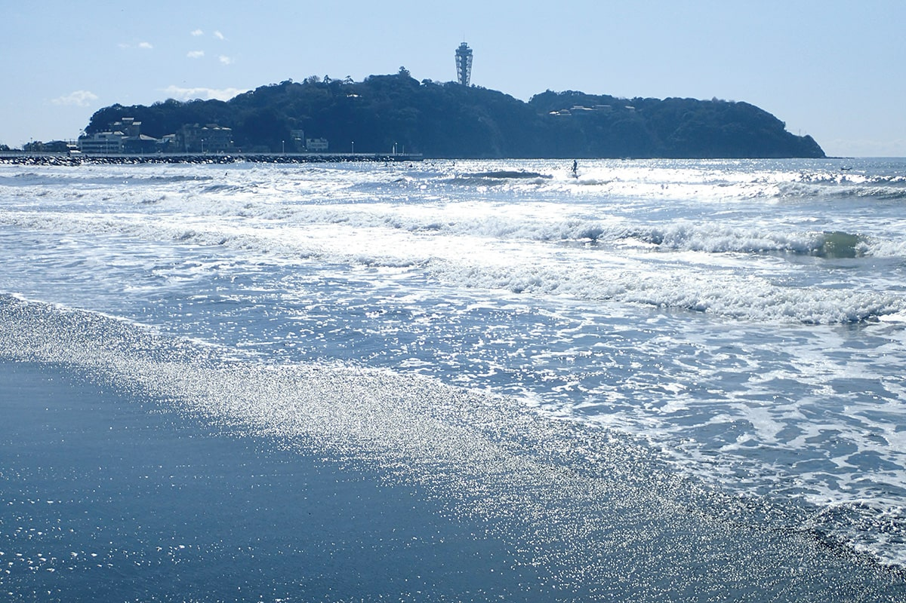
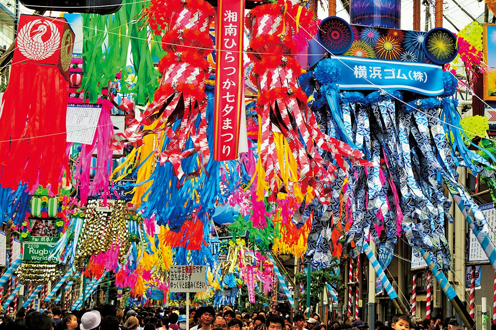
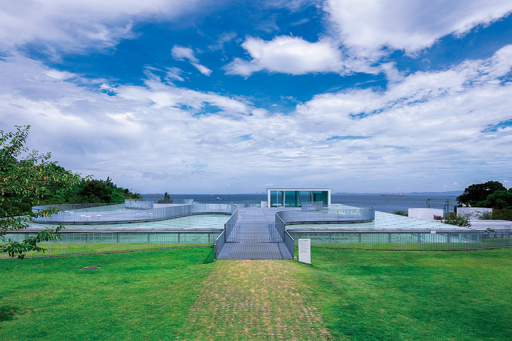
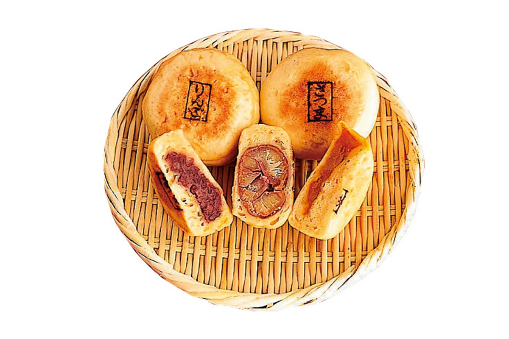
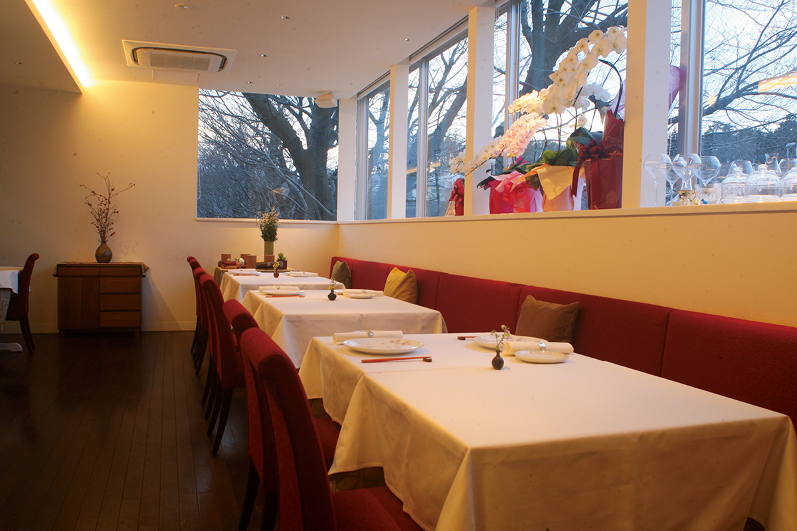
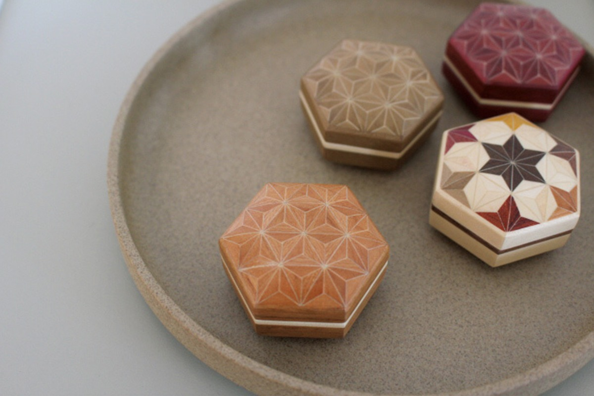
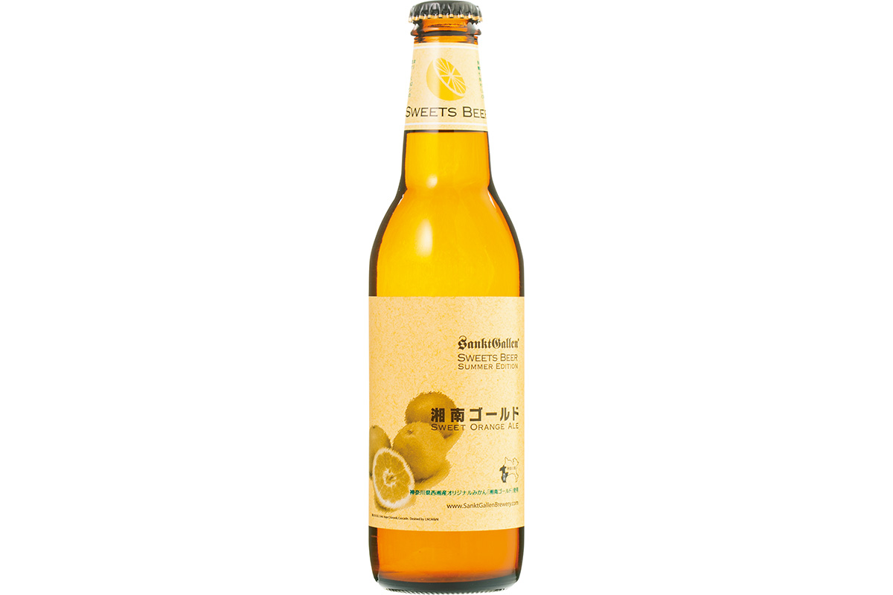
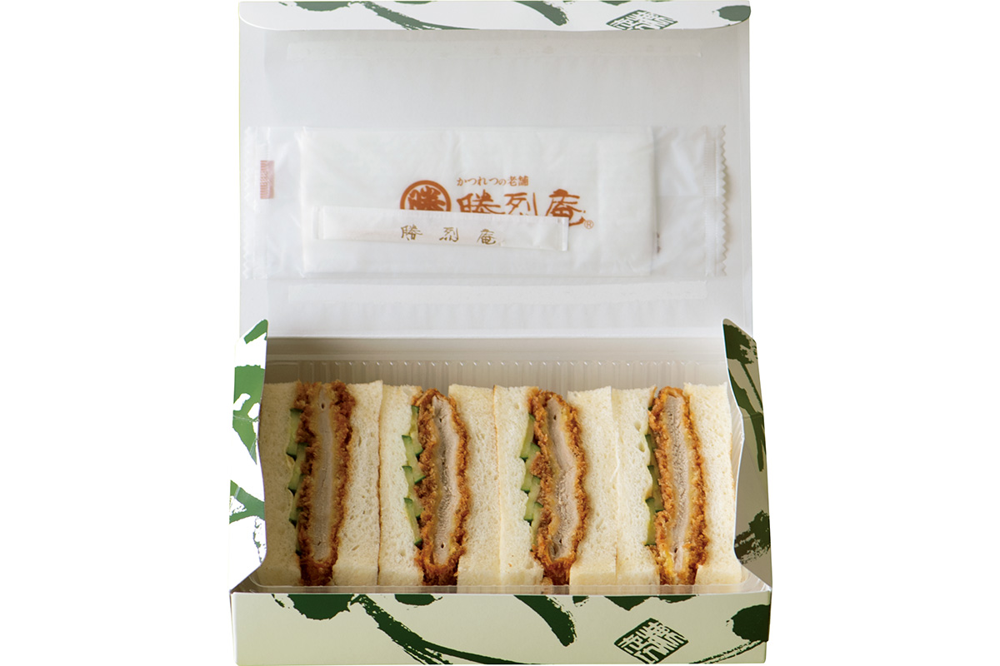
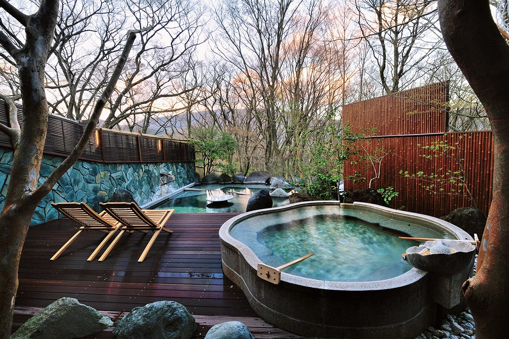

Префектура Канагава
Канагава: морской берег Эносимы, Хаконэ и первая столица воинов

Волны идут к песчаному берегу, в дымке видны зелёный остров и красные постройки среди деревьев.
Здесь стоит город с самым большим населением страны, рядом с ним лежат пляжи Сёнана, а в горах пар поднимается над горячими источниками. Рассказываем, за чем ехать в Канагаву.
Карта: 55 мест из 46 статей · все статьи о Канагаве
Карта
Канагава на карте
55 мест из наших статей о префектуре Канагава: замок Одавара и обсерватория Сугимото, Югавара и Манадзуру, гора Ояма, отели и рестораны Ёкогамы, Сёнан и Камакура, Хаяма и Миура, онсэны и музеи Хаконэ. Нажмите на точку, чтобы открыть статью.
Пунктирный круг означает, что точка примерная: место находится в этом районе или на этом острове.
О префектуре
Здесь началась власть воинов
В городе Иокогама живёт 3,7 миллиона человек, и по населению он уступает только двадцати трём районам Токио, но обгоняет Осаку. Всего же в префектуре три города государственного значения, Иокогама, Кавасаки и Сагамихара, и это больше, чем в любой другой префектуре страны. При этом рядом лежат Камакура, Хаконэ и Сёнан, то есть известнейшие места отдыха.
Если копнуть историю, то уже в середине эпохи Хэйан здесь рос слой землевладельцев, которые постепенно становились воинами. К 1192 году Минамото-но Ёритомо (1147–1199) открыл в Камакуре своё управление, то есть первую в стране военную власть, бакуфу. Много позже, в конце эпохи Эдо, приход кораблей американского коммодора Перри (1794–1858) положил конец закрытости страны, и Иокогама стала одним из портов, через которые страна общалась с иностранцами: именно сюда западные вещи попали раньше всего. Само название Канагава идёт от места, где при открытии порта поставили управу, которая следила за делами с иностранцами.
В первый год правления Рэйва, то есть в 2019 году, тайфун номер девятнадцать сильно ударил по Хаконэ. Сейчас гостиницы и источники вернулись к обычной работе, остаётся только восстановление горной железной дороги Хаконэ-тодзан-тэцудо: её планируют открыть на всём протяжении 23 июля. В горах тут стоит 36 горячих источников, а сама дорога по склону это отдельная местная достопримечательность.
Что посмотреть
Остров, к которому ведёт мост
Эносима
Небольшой остров длиной около четырёх километров в окружности лежит прямо у берега Сёнана, и с сушей его соединяют мост Эносима-охаси и мост Бэнтэн-баси. Здесь стоят святилище Эносима-дзиндзя, пляжи и банный комплекс, поэтому остров считается главным местом отдыха всего Сёнана.
- Справки
- туристическая ассоциация города Фудзисава
- Телефон
- +81 466-22-4141
Что ещё посмотреть
- Озеро Аси, озеро в кратере у подножия горы Хаконэ
- Овакудани, долина, где из камней поднимается серный пар
- Святилище Цуругаока Хатимангу, главное святилище Камакуры
Праздники
Улицы, завешанные бумажными украшениями
Праздник Танабата в Хирацуке
Своё начало этот праздник берёт в 1950 году, когда город Хирацука устроил его после войны как знак восстановления. Теперь это один из самых известных праздников Танабата в стране: улицы плотно закрывают большие украшения, и по ним идут шествия.

- Период
- начало июля
- Место
- улицы города Хирацука, префектура Канагава
Другие праздники
- Шествие даймё в Хаконэ, осенний парад в костюмах эпохи
- Праздник Кибунэ, летнее шествие с лодками у моря
- Большой обряд святилища Цуругаока Хатимангу, главный праздник святилища в Камакуре
Музеи и архитектура
Круглые окна в потолке над морем
Художественный музей Иокосуки
Музей стоит там, где сходятся зелень парка Каннондзаки и синяя вода Токийского залива, и здание построили так, чтобы это место было видно изнутри: в потолке и стенах сделаны круглые отверстия разного размера, поэтому свет и вид на воду входят в залы свободно.

- Адрес
- 4-1 Kamoi, Yokosuka, Kanagawa
- Телефон
- +81 46-845-1211
- Сайт
- yokosuka-moa.jp
Что ещё посмотреть
- Праздник гортензий в Кайдзуке, летний праздник у воды
- Фонари на Эносиме, вечерняя подсветка на острове
- Праздник Мондже в Сагами-Оно, уличный праздник с едой и музыкой
Местная кухня
Лепёшка с начинкой из сезонных трав
Канкояки
Это простое угощение с давних пор готовят в Сагамихаре. Жидкое тесто из пшеничной муки раскатывают тонко, заворачивают в него весенние горные травы или осенние грибы, а потом запекают на горячей плите. Получается плотная лепёшка, которую здесь едят и как перекус, и как домашнее лакомство.

Что ещё попробовать
- Дон с сирасу, миска риса с мелкой белой рыбой
- Суп Кэнтё, густой суп с овощами из храмовой кухни
- Данго хэра-хэра, мягкие рисовые лепёшки
Где поесть
Французская кухня из местных продуктов
«Петаль де Сакура»
Здесь готовит владелец и шеф, который работал в нескольких ресторанах со звёздами. В меню французская кухня с добавлением лекарственных трав, и шеф старается брать продукты у местных хозяйств: такое совпадение сезона и края здесь считают главным делом ресторана.

- Адрес
- 5-2 Yayoidai, Izumi, Yokohama, Kanagawa
- Телефон
- +81 45-443-5876
- Часы
- с 11:30 до 15:00 и с 18:00 до 22:00
- Выходные
- понедельник
Ремёсла
Шкатулка, собранная из кусочков разных пород
Мозаика ёсэги из Хаконэ
Этот промысел идёт с эпохи Эдо: тонкие пластины разных пород дерева складывают вместе и склеивают так, что получается узор, а потом из этого полотна делают шкатулки и мелкие коробочки. Современные мастера делают вещи для обычного дома, поэтому рисунок бывает и простым, и совсем мелким.

- Телефон
- +81 460-83-6222
- Сайт
- e-yosegi.jp
Что привезти
Пиво с местным апельсином и сэндвич с котлетой
Пиво «Сёнан голд» завода Санкт-Галлен
Завод Санкт-Галлен известен сезонным пивом на местных фруктах, и «Сёнан голд» варят с апельсином, который выращен в самой префектуре. Бутылка 330 миллилитров стоит 506 иен, а продают это пиво только до конца сентября.

- Телефон
- +81 46-224-2317
Сэндвич с котлетой от «Кацурэцу-ан»
Эта лавка работает с 1927 года, и её сэндвич с котлетой здесь считают своим, иокогамским. Сэндвич делают на заказ и продают с собой; в главном доме на улице Басёдо он стоит 1188 иен.

- Справки
- главный дом «Кацурэцу-ан» на улице Басёдо
- Телефон
- +81 45-681-4411
Где остановиться
Купель под открытым небом в каждом номере
Гора Ханаоги «Энка-но мори»
Это гостиница в Хаконэ, где в каждом номере есть своя купель под открытым небом, и вода идёт прямо из источника этого дома, без подогрева и без добавок. На ужин подают парадный набор: рыбу и моллюсков из залива Сагами, овощи из Асигары и отобранную говядину из Хиды.

- Адрес
- 1320-862 Gora, Hakone, Ashigarakami, Kanagawa
- Телефон
- +81 460-82-4100
- Комнат
- 20
- Цена
- от 43 000 иен за ночь с двумя приёмами пищи, налоги и сбор включены
Местный диалект
Как здесь говорят «очень вкусно»
- суггээ умээ бээочень вкусно
- ёкоири сундзя нээ ёне лезь без очереди
- гоми о уттярэвыброси мусор
- иэ-но нака дэ абакурэнане носится по дому
Рекорды
В чём Канагава первая
- №1 производство вина: первое место в стране
- №1 потребление сюмай, то есть паровых пельменей: первое место
- №1 время, которое люди тратят на дорогу до работы: первое место
Вопросы и ответы
Что ещё спрашивают о Канагаве
У какой железной дороги от начала до конца всего десять километров?
У линии Эносима-дэнтэцу. Она соединяет Фудзисаву и Камакуру вдоль берега Сёнана, и её зовут коротко «Энодэн». Дорога идёт всего десять километров, но пейзаж вдоль моря сам по себе считается картиной, поэтому линию знают далеко за пределами префектуры.
Какое блюдо придумали в Иокосуке, чтобы пополнять силы?
Рис с карри. Его восстановили по старинной книге о флотской кухне эпохи Мэйдзи, и теперь местные зовут это блюдо «иокосука кайгун карри». По правилам заведения к нему обязательно подают салат и молоко.
Справочник
Канагава в цифрах
Общие сведения
| Административный центр | Иокогама |
| Муниципалитеты | 19 городов, 13 посёлков, 1 деревня |
| Площадь | 2416 кв. км |
| Население | 9,18 млн человек |
| Плотность населения | 3798,2 человека на кв. км |
| Туристов в год | 49,11 млн |
| Дерево префектуры | гинкго |
| Цветок префектуры | лилия ямаюри |
| Птица префектуры | чайка |
Климат
| Средняя температура | +17,1 |
| Максимум | +32,2 |
| Минимум | +2,1 |
| Осадки | 1574 мм |
| Ясных дней | 34 |
| Дождливых дней | 104 |
| Снежных дней | 6 |
Для путешественника
| Онсэнов | 36 |
| Гостиниц и рёканов | 582 |
| Музеев искусств | 38 |
| Музеев | 39 |
| Митиноэки, придорожных станций | 3 |
| Национальное сокровище | портрет Ходзё Санэтоки на шёлке из храма Сёмё-дзи |
| Важных культурных ценностей | 342, из них 18 национальных сокровищ |
| Исторических мест | 25 |
| Живописных мест | 3 |
| Природных памятников | 63 |
| Национальные парки | Фудзи-Хаконэ-Идзу, Тандзава-Ояма, всего 2 |
Природные памятники
- Актиния умэбоси, редкое морское животное здешних вод
- Старые опоры моста через Сагами, остатки деревянного моста в русле
- Сосна у храма Дзёган-дзи, большое старое дерево
- Рододендрон в Хаякаве, редкий кустарник у воды
Наши статьи
Все статьи о Канагаве
Одавара и Югавара
- Замок Одавара: последняя крепость на пути Хидэёси Тоётоми к власти над всей Японией
- «Эноура сокухосё»: обсерватория солнца и моря Хироси Сугимото в Одаваре
- Enoura Retreat Rimon: минеральный туман из онсэна на побережье Одавары
- Calanques в Югаваре: буйабес шефа, который каждое утро выбирает рыбу сам
- «Кибунэ мацури» в Манадзуру: летний праздник, где микоси плывут по морю
- Workcation House U: старое здание управы над заливом Сагами, где работают с видом на море
Ояма и центр
- Святилище Ояма Афури: чайная «Сэкисон» и кипарисовый зал Ясуси Хорибэ
- Музей «Романскар» в Эбине: экспрессы Одакю, огромная диорама и поезда, в которые можно зайти
- SanktGallen из Ацуги: шоколадное пиво без грамма шоколада
- Святилище Самукава: защита от бед со всех восьми сторон и тайный сад за главным залом
Ёкогама и Кавасаки
- Художественный музей Ёкогамы: портовый музей Кэндзо Тангэ снова открыт целиком
- Парк Ринко в Ёкогаме: деревянный павильон у порта, задуманный по примеру святилища Исэ
- InterContinental Yokohama Pier 8: отель на причале, окружённый морем с трёх сторон
- The Kahala Hotel & Resort Yokohama: гавайский отель в стеклянной башне у порта Ёкогамы
- Katsuretsu-an в Ёкогаме: котлета, сэндвич и гравюры Сико Мунакаты
- Pétale de Sakura: французская кухня из ёкогамских овощей и идей якудзэна
- Yokohama Bay Brewing: пилснер из Ёкогамы, который оценили в Чехии
- TDM 1874 Brewery: винная лавка с полуторавековой историей варит пиво Ёкогамы
- «Ёкогама Кимидзимая»: винная лавка с 1892 года и зал японского вина
- Sky Spa Yokohama: финская сауна, римская парная и ауфгус на 14-м этаже
- HAZAAR в Хадзаве: как складской квартал Ёкогамы становится новым городом
- HOSHITEN qlay: город под эстакадой железной дороги в Ёкогаме
- «Сакадоя» в Кавасаки: сакэ от 100 мл и девять бутылок, которые советует управляющий
Сёнан и Камакура
- «Хамаори-сай» в Тигасаки: сорок микоси на рассвете входят в море
- 8HOTEL CHIGASAKI: мотель на побережье Сёнан с финской сауной и бассейном во дворе
- MAYA в Камакуре: дом около 1930 года постройки целиком для своей компании
- Modern Ryokan kishi-ke: дом самурайского рода у пляжа Юигахама в Камакуре
- BAM Kamakura: музей британского антиквариата в здании Кэнго Кумы
- Femme de Bateau Aoki: ресторан в Камакуре, хозяйка которого сама выходит в море
- Камакура на вынос: где местные покупают еду популярных заведений без очереди
Хаяма, Дзуси, Ёкосука, Миура
- Kachi Tei в Хаяме: вилла ученика Фрэнка Ллойда Райта, которую сдают целиком
- THE HARBOR TERRACE: дом у моря в Дзуси с видом на Эносиму и Фудзи
- Художественный музей Ёкосуки: стекло, сталь и Токийский залив
- «THE AXIS OF PEACE»: луч мира над холмом в Ёкосуке, где стояла батарея
- «Вайн-но ки AKIYA»: итальянская кухня из продуктов Миуры и дом у моря на одну компанию
- «Какэда сётэн» в Ёкосуке: музей выдержанного сакэ и девять бутылок от хозяина
- Fufu Дзёгасима: первый морской курорт «Fufu» на краю полуострова Миура
- Овощи Миуры и сирасу из залива Сагами: куда за ними ездит кулинар с побережья
Хаконэ
- Hakone Suishoen: рёкан вокруг виллы Мицуи 1925 года в лесу Ковакидани
- Fufu Хаконэ: горы напротив, два онсэна и ужин, который собираешь сам
- «Мадока-но мори» в Хаконэ: два своих источника, водородная плита и кола с соевым соусом
- «Сэнкёро бэттэй Оку-но кики»: белая вода Овакудани в каждом номере
- The Hiramatsu в Сэнгокухаре: отель в Хаконэ, который вырос из ресторана
- Hakone Taiyo Sanso: старая деревянная гостиница в Горе с молочно-зелёным онсэном
- Nicolai Bergmann Hakone Gardens: лесной сад флориста из Дании в горах Хаконэ
- Музей Нарукава в Хаконэ: японская живопись, озеро Аси и Фудзи в окне